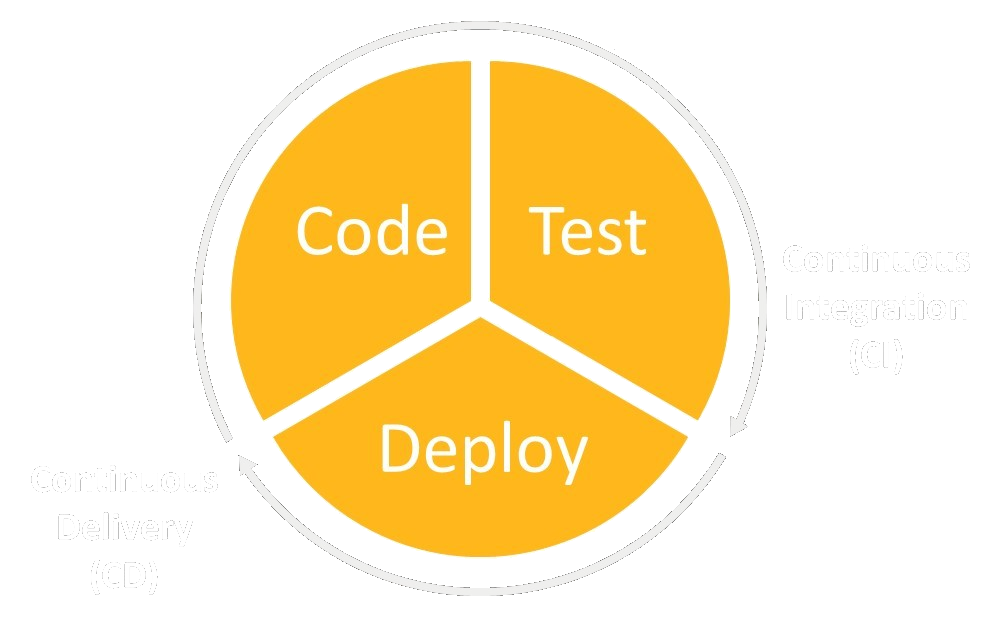
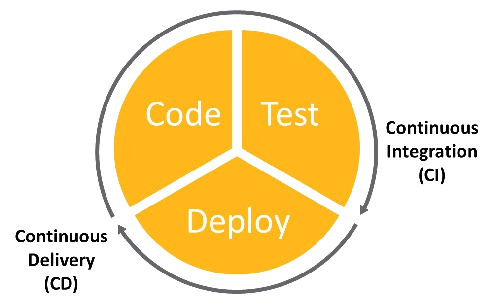

Develop code#
You can help improve PyMAPDL by fixing a bug or developing a new feature. To do either, you must set up the repository on your local machine as per the explanations in the following sections.
Clone the PyMAPDL repository#
Before cloning the PyMAPDL repository, you must install a version control system such as Git. You can this run this code to clone the latest development version of PyMAPDL:
git clone https://github.com/ansys/pymapdl
cd pymapdl
Create a Python virtual environment#
To avoid dependency conflicts and more easily manage upgrades, you should install PyMAPDL in its own virtual environment. For detailed information on how to install Python and create a virtual environment, see Setting up your development environment.
Install PyMAPDL in development mode#
Install the latest version of PyMAPDL in development mode with these commands:
cd pymapdl
pip install pip -U
pip install -e .
If you are going to do testing, you must install the testing dependencies with this command:
pip install -e '.[tests]'
Develop PyMAPDL#
Now it is time to develop PyMAPDL!
Developing code in a repository, particularly when using version control systems like Git, involves a set of essential guidelines to ensure efficient collaboration, code management, and tracking changes. Here are the main guidelines for developing code in a repository:
Use branches: Create branches for different features, bug fixes, or experiments. This keeps changes isolated and facilitates parallel development. The CI/CD checks that the branch name is compliant. For example, the branch name must start with a prefix and a backslash. The allowed prefixes are:
fix/ - Bug fixes.
feat/ - Changes that introduce a new feature or significant addition.
maint/ - General maintenance of the repository. For instance, improving the CI/CD workflows.
docs/ - Improves documentation and examples.
no-ci/ - (Not applicable to PyMAPDL) In some repositories, branches with this prefix do not trigger CI/CD.
test/ - Improvements or changes to testing.
testing/ - For testing and debugging. It should not be used for branches that are going to be merged to
main.release/ - Contains the released versions changes.
dependabot/ - Created by Dependabot.
junk/ - Other purposes. It should not be used for branches that are going to be merged to
main.
Write descriptive commit messages: Provide clear and concise commit messages that explain the purpose and context of the changes. Follow a consistent style.
fix: - Bug fixes.
feat: - Changes that introduce a new feature or significant addition.
docs: - Changes pertaining only to documentation.
style: - Changes that do not affect the meaning of the code (such as white space, formatting, and missing semicolons).
refactor: - A code change that neither fixes a bug nor adds a feature.
perf: - A code change that improves performance.
test: - Improvements or changes to testing.
build: - Changes that affect the build system or external dependencies (such as to
pipormake).ci: - Changes to the CI/CD configuration files and scripts.
chore: - Other changes that don’t modify the code (such as releasing and versioning).
revert: - Reverts a previous commit.
Commit frequently: Make small, meaningful commits frequently. Avoid making a large number of unrelated changes in a single commit.
Pull before you push: Always update your local branch with the latest changes from the remote repository before pushing your own changes to avoid conflicts.
Use pull requests (PRs): Use PRs to submit your changes for review. This allows for discussion and validation before merging into the main branch. Pull requests must follow the same convention as the commit messages. The following prefixes are allowed in the pull request names:
fix: - Bug fixes.
feat: - Changes that introduce a new feature or significant addition.
docs: - Changes pertaining only to documentation.
style: - Changes that do not affect the meaning of the code (such as white space, formatting, and missing semicolons).
refactor: - A code change that neither fixes a bug nor adds a feature.
perf: - A code change that improves performance.
test: - Improvements or changes to testing.
build: - Changes that affect the build system or external dependencies (such as to
pipormake).ci: - Changes to the CI/CD configuration files and scripts.
chore: - Other changes that don’t modify the code (such as releasing and versioning).
revert: - Reverts a previous pull request.
The pull requests can also be labeled for easier repository maintenance. The CI/CD automatically labels each pull request based on the pull requests prefix and the modified files, but you can also add extra labels as long as they are already defined in the repository.
Write good documentation: Maintain clear and up-to-date documentation for your contribution or changes, including comments in code, and relevant project documentation in rST or Markdown files. If you implement a new feature or change the behaviour of the library in any way, remember to mention it somewhere in the documentation (rST files in
docsourcedirectory) Follow the numpydoc convention for documenting code.Test your changes: Thoroughly test your changes to ensure that they work as expected. If applicable, create or update the unit tests that run on the continuous integration/continuous deployment (CI/CD) pipelines to catch issues early and ensure reliable deployments. For more information, see Unit testing.
Respect code style and standards: Follow code style guidelines and adhere to coding standards specific to your language or framework.
Collaborate and communicate: Communicate with team members, provide updates on your progress, and resolve any conflicts promptly.
Ask for help: To ensure code quality, identify issues, and share knowledge, ask PyMAPDL developers to assist you and review your code. If you need help or guidance, mention
@ansys/pymapdl-maintainersin a comment so they they are notified.
By following these guidelines, you can ensure smooth and organized code development within a repository, fostering collaboration, code quality, and feature enhancement.
Unit testing#
Unit tests validate the software by testing that the logic implemented inside a certain method, class, or module is working as expected. They should be as atomic and independent as possible.
Unit testing is highly important. The tests verify that code changes are consistent with other parts of the code and verify that these changes are implemented properly.
In the PyMAPDL repository, pytest is used to run tests and the unit tests are in the tests directory in this repository, along with integration tests. The difference between a unit test and an integration test is that the latter tests several units of the code to ensure that they all work together.
To run all the unit tests use the following command:
(.venv) mapdl@machine:~/pymapdl$ pytest
If you are running on a Linux machine without display, you must install xvfb OS
library and run the preceding command with the xvfb-run command as prefix.
(.venv) mapdl@machine:~/pymapdl$ xvfb-run pytest
In case you want to run only a certain subset of tests, you can use the -k argument
to filter the tests using booleans:
(.venv) mapdl@machine:~/pymapdl$ pytest -k "test_nlist_to_array or test_string_with_literal"
==================================================== test session starts ====================================================
platform darwin -- Python 3.10.13, pytest-7.4.3, pluggy-1.3.0
rootdir: /Users/german.ayuso/pymapdl
configfile: pyproject.toml
testpaths: tests
plugins: timeout-2.2.0, cov-4.1.0, sphinx-0.5.0, rerunfailures-13.0, anyio-4.1.0, pytest_pyvista-0.1.9
collected 1468 items / 1466 deselected / 4 skipped / 2 selected
tests/test_commands.py .. [100%]
=============================================== PyMAPDL Pytest short summary ================================================
======================================= 2 passed, 4 skipped, 1466 deselected in 2.27s =======================================
Creation of a unit test#
The name of a pytest file must be in the form test_XXX.py, where XXX
is either the function, method, or class that you are testing or some other explicative
name. In the command line, you can use the -k argument to filter the tests to run.
For more information, see pytest usage.
Here are some guidelines for creating good unit tests:
Assign long and descriptive names to tests.
Use the Codecov tool to ensure that all implemented code is tested.
Check that tests return the same results each time.
Verify that tests are independent.
Write tests that verify only one part of the code at a time.
Make tests as short and fast as possible.
What makes a good unit test? is an exhaustive list of tips for creating good unit tests.
Most PyMAPDL tests require a connection to a running instance of MAPDL, which makes them integration tests. If your test requires a running MAPDL instance, you can use the PyMAPDL mapdl method in your function signature. It is executed upstream of each test and not within all tests.
def test_my_new_feature(mapdl): # pass the 'mapdl' fixture as an argument.
mapdl.prep7()
# .... more code
return True # if everything goes ok until here
If you do not have MAPDL installed locally but still want to run the unit testing, you must set up the following environment variables.
SET PYMAPDL_START_INSTANCE=False
SET PYMAPDL_PORT=<MAPDL Port> (default 50052)
SET PYMAPDL_IP=<MAPDL IP> (default 127.0.0.1)
export PYMAPDL_START_INSTANCE=False
export PYMAPDL_PORT=<MAPDL Port> (default 50052)
export PYMAPDL_IP=<MAPDL IP> (default 127.0.0.1)
These environment variables tell PyMAPDL to attempt to connect to the existing
MAPDL service by default when the launch_mapdl function is used.
Additionally, you can use the PYMAPDL_MAPDL_EXEC and PYMAPDL_MAPDL_VERSION
environment variables to specify the MAPDL executable path and the version to launch (if
multiple versions of MAPDL are installed).
Continuous integration and continuous deployment#
Unit tests and integration tests are part of continuous integration (CI). The automation of testing, monitoring, and deployment of newly added code allows continuous deployment (CD) throughout the app lifecycle, providing a comprehensive CI/CD approach.
 {kind=link}
{kind=link}
Example#
The test_component.py file contains
the unit tests and integration tests for the
ComponentManager class.
These tests are just some of the many in the test directory.
Here are some examples of how you use pytest:
import pytest
# 'cube_geom_and_mesh' is another fixture defined in 'conftest.py'
@pytest.fixture(scope="function")
def basic_components(mapdl, cube_geom_and_mesh):
"""Given a model in 'cube_geom_and_mesh', define some components to work with later."""
mapdl.components["mycomp1"] = "NODE", [1, 2, 3]
mapdl.components["mycomp2"] = "KP", [1, 3]
mapdl.cmsel("s", "mycomp1")
mapdl.cmsel("a", "mycomp2")
def test_dunder_methods_keys(mapdl, basic_components):
assert ["MYCOMP1", "MYCOMP2"] == list(mapdl.components.names())
def test_dunder_methods_types(mapdl, basic_components):
assert ["NODE", "KP"] == list(mapdl.components.types())
def test_dunder_methods_items(mapdl, basic_components):
assert [("MYCOMP1", "NODE"), ("MYCOMP2", "KP")] == list(mapdl.components.items())
For further pytest configuration details, see the pytest documentation.
Code coverage#
To verify that all code is properly tested, you must ensure that every piece of code is used (covered) in at least one unit test. In this repository, the Codecov tool generates a coverage report of the committed code. It indicates how merging a pull request would impact coverage. The generation of this report is one of the checks that must run successfully to merge code changes.
{kind=link}
Coverage example#
To show how the coverage works, assume that you have this library:
Awesome library
def get_report_colors(theme):
if theme == "weather":
colors = ["blue", "lightblue", "grey"]
elif theme == "traffic":
colors = ["red", "orange", "yellow"]
else:
colors = ["red", "blue", "green"]
return colors
Tests
You can opt to run the tests with this configuration:
def test_get_report_colors():
assert get_report_colors("weather") == ["blue", "lightblue", "grey"]
assert get_report_colors("traffic") == ["red", "orange", "yellow"]
assert get_report_colors("other") == ["red", "blue", "green"]
Or, if a method is a bit more complex, you can split the case in different tests:
def test_get_report_colors_weather():
assert get_report_colors("weather") == ["blue", "lightblue", "grey"]
def test_get_report_colors_traffic():
assert get_report_colors("traffic") == ["red", "orange", "yellow"]
def test_get_report_colors_other():
assert get_report_colors("other") == ["red", "blue", "green"]
While the code coverage in either case is 100% for the function, the second case is more useful for debugging the function.
You can also use parametrize (pytest.mark.parametrize) to make the code more readable, and easier to reuse.
@pytest.mark.parametrize(
"theme,output",
[
["weather", "traffic", "other"],
[
["blue", "lightblue", "grey"]["red", "orange", "yellow"][
"red", "blue", "green"
]
],
],
)
def test_get_report_color(theme, output):
assert get_report_colors(theme) == output
For further explanations, see the pytest documentation .
Code style#
PyMAPDL follows the PEP8 standard as outlined in the PyAnsys Development Guide and implements style checking using pre-commit.
To ensure your code meets minimum code styling standards, run these commands:
(.venv) mapdl@machine:~/pymapdl$ pip install pre-commit
(.venv) mapdl@machine:~/pymapdl$ pre-commit run --all-files
You can also install this as a pre-commit hook by running this command:
(.venv) mapdl@machine:~/pymapdl$ pre-commit install
Since you have installed pre-commit as a hook, git automatically
runs these hooks before committing, failing if it find any
format issues and making or proposing the necessary changes
to the commit.
If this happens, you might need to run commit and edit these
changes several times before commit successfully.
(.venv) mapdl@machine:~/pymapdl$ git commit -m "my commit"
[INFO] Stashing unstaged files to /home/mapdl/.cache/pre-commit/patch1704703895-16914.
Add License Headers......................................................Passed
isort....................................................................Passed
numpydoc-validation......................................................Passed
black....................................................................Passed
blacken-docs.............................................................Failed
- hook id: blacken-docs
- exit code: 1
- files were modified by this hook
doc/source/getting_started/develop_pymapdl.rst: Rewriting...
This way, it’s not possible for you to push code that fails the style checks. For example:
(.venv) mapdl@machine:~/pymapdl$ git commit -m "my commit"
[WARNING] Unstaged files detected.
[INFO] Stashing unstaged files to /home/mapdl/.cache/pre-commit/patch1704703895-16914.
Add License Headers..................................(no files to check)Skipped
isort................................................(no files to check)Skipped
numpydoc-validation..................................(no files to check)Skipped
black................................................(no files to check)Skipped
blacken-docs.............................................................Passed
flake8...............................................(no files to check)Skipped
codespell................................................................Passed
check for merge conflicts................................................Passed
debug statements (python)............................(no files to check)Skipped
Validate GitHub Workflows............................(no files to check)Skipped
[INFO] Restored changes from /home/mapdl/.cache/pre-commit/patch1704703895-16914.
[ci/mybranch cXXXXXXX] my commit
1 file changed, 25 insertions(+)
(.venv) mapdl@machine:~/pymapdl$
First time you run pre-commit (using git commit or pre-commit), the command
might take a bit of time (2-3 minutes) to download the specified hooks and install them.
After that first time, analysing your commits should take seconds.
pre-commit hooks can also be updated, added or removed. For more information, visit
pre-commit website.